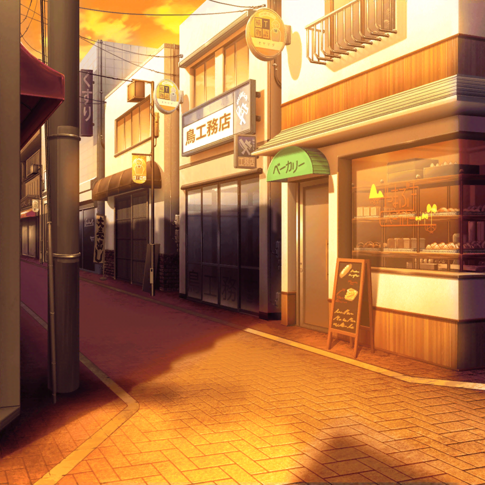

数日後
花咲川女子学園 1-A教室
香澄
学校終わりー！
有咲呼んでくる！
沙綾
でも有咲、教室で待ってろって言ってなかった？
香澄
だいじょーぶだよ～！ 行ってきま～す♪
たえ
お土産よろしく
りみ
もう姿が見えなくなっちゃった……
沙綾
商店街に行きたくてウズウズしてるの、丸わかり
りみ
演奏できるか、お願いするんだもんね。
私はちょっと緊張してるかも
たえ
ドキドキ。でも楽しみ
沙綾
みんなで頑張って、この想いを伝えないとだね
たえ
自然とやる気が出てくる
りみ
どうか、上手くいきますように……
香澄
みんな～！ 有咲捕まえたよ♪
有咲
ごきげんよう
たえ
ごきげんよう。……怒ってる
りみ
有咲ちゃん怒ってるよね
香澄
えっ、有咲怒ってるの？
有咲
終わったら教室で待ってろって言ったよな。今朝
香澄
待ち切れなかったから、つい♪
有咲
分かっててやったなら、もっと悪いから
沙綾
まあまあ、有咲のことが好きだから仕方ないんじゃない
香澄
そうだよ～♪
たえ
有咲モテモテ
有咲
うっとうしいこと、この上ないけどな
沙綾
それじゃあ、みんな集まったことだし、
商店街に行こうか
香澄
賛成！
いざ、戦地へ！！
たえ
戦いに

商店街
香澄
たのもー！！！
有咲
そういうのいらないから
りみ
こ、こんにちはっ
商店街のおじさん
おや？
君たちは、この前の……？
沙綾
先日はお騒がせしてすみませんでした
たえ
お時間ありますか
りみ
どうしても、お伝えしたいことがありまして……
商店街の人たち
何か大切なことなのかな？
有咲
ほら、香澄
香澄
うん！
今日は、商店街のお祭りのことで、お願いに来ましたっ！
商店街の人たち
お祭りが中止になった件かい？
香澄
そうです！
商店街のおじさん
区の職員さんに、
その話は無理だと言われたはずだよね？
沙綾
はい。
それで一つ相談というか、お願いがあって……
香澄
私たち、演奏したいです！
商店街の人たち
演奏……？
たえ
ここにいる五人で、バンドを組んでいます
りみ
ぽっ、Poppin'Partyって言います！
有咲
商店街のお祭りで演奏したいので、
今年も開いてもらえませんか？
商店街の人たち
開きたいのは私たちも同じだよ。
ただ、区が決めたことだからね……
りみ
お願いします！
無理だと思ったら、そこで終わりになってしまうんです！
沙綾
毎年、大勢の人たちが楽しみにしてるんです。
だからこそ、中止にはしたくないんです
有咲
もし演奏させてもらえるなら、
例年よりも、もっともっとみんなを楽しませてみせます
たえ
一生懸命頑張ります
りみ
ガッカリはさせないって約束します！
だから、私たちにチャンスをもらえませんか？
香澄
商店街のみなさんっ！
お願いしますっ！！
商店街のおじさん
若い子たちに、
ここまで言わせて追い返すのもかわいそうだ
商店街の人たち
お祭りをしたいのは、
ここにいる誰もが思っていることだからね
商店街のおじさん
……分かった。
小規模なものでよかったら、開いてみることにするよ
香澄
ほんとですかっ！？
りみ
ありがとうございます！
でも、予算は……？
商店街のおじさん
なに、おじさんたちに任せなさい！
沙綾
それじゃあ、来年以降は……
商店街の人たち
区の予算が取れなければ、さすがに来年は難しいだろうね
商店街のおじさん
今回のお祭りがうまく行ったら予算案を見直してくれるよう
区のほうに頼んでみるよ。
十分な集客が見込めるとなれば、考え直してくれるかもしれない
香澄
今年のお祭り次第、ってことですね！
たえ
プレッシャー。負けられない
有咲
絶対に楽しませてみせますから
沙綾
無茶なお願いを聞いてくれて、
本当にありがとうございます！
商店街の人たち
しっかりね。
君たちの演奏を楽しみにしておくよ
香澄・有咲・りみ・たえ・沙綾
はいっ！！！